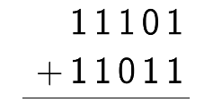
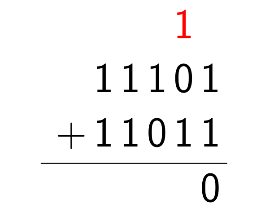
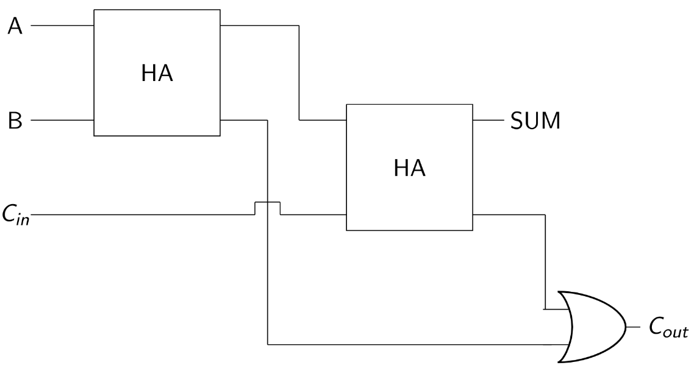

Full Adders
Ok, here's the $64 question- suppose we wanted to add binary numbers that had more than just one digit. What would we do then?
The key is in generalizing. We already have a circuit that can add two one-digit binary numbers, so why don't we try and scale that up to add two n-digit binary numbers?
That's where the Full Adder comes in.
Scaling
So, how will we accomplish this 'scaling'? I think the best way to think about this is the same way that that we did the half adder example- with good old visual addition.
Now, we've moved past single-digit addition. Suppose we wanted to add two multi-digit binary numbers by hand. Let's take a look at an example below where we'll try to add 11101 and 11011.
Think back to elementary school- what's your natural process when you add these? You go column by column.
Consider doing this with our previously created circuit. The first column would be easy, we would add 1 and 1, yielding 0 as a sum and 1 as a carry. Excellent.
However, we now have a bit of a problem. We want to add what's in the second column, but we have the 'carry' of the previous operation to deal with.
We can account for this! The key here is that we will always have at most one more 'carry' bit coming in.
If we're going to make an adder that we can use over and over for as many digits as we want, we're going to need it to do the following:
Add two one-digit binary numbers and produce a sum and carry
In case the previous addition resulted in a carry, be able to add in that third number as well
This one is a little less straightforward, but with a little bit of effort, we can produce a circuit that does exactly that. Here it is, below. The truth table for this will be left as an exercise to the reader.

Knowing this, we can effectively 'chain' the addition operations. After we use a half adder for the first column, we take the carry bit from that and use it in a full adder to add the second column. From then on, we can use full adders for the subsequent columns, effective adding an n-digit binary number.
Below is a diagram showing four adders chained. Note that we can also use a Full adder for the first column, but that would be inefficient, as we know the 'carry in' would always be zero.

Here's another way to think about it. The reason we use a half adder for the first column and a full adder for the rest of the columns is because for every column other than the first column, we may have to deal with a carry-over.
Alternate Construction
We can also construct a full adder using half adders. This makes addition even easier in some cases, like above, when we chain them. This allows us to use only half-adders to build the entire set of adders.
Full Adders in Minecraft
In Minecraft, it's easy to get carried away and build out the gates that we learned in order to produce a very large full adder, but many clever people have worked hard to squish the design for a full adder down as much as possible, leveraging redstone nuances in order to make a truly efficient full adder.
In that sense, the most efficient Minecraft way to build a full adder is a little tougher to understand right off the bat, but it does indeed work.
You can always leverage the logic gates we created earlier along with the schematics above to manually build a fairly large full adder, but again, that will take up far more space than the condensed, optimized full adder that we are suggesting you use in your designs.
There are a multitude of ways to build a Full Adder in Minecraft, but I must emphasize that you should not manually build out all the logic gates yourself, or even conglomerate half-adders for this purpose.
Minecraft players have spent years taking advantage of the nuances of Minecraft and building full adders as compactly as possible, and the result is a variety of very efficient ways to build functional Full adders.
At the time of writing, both instructors of this course (Ashwath Krishnan and I) have two different preferred ways of building a Full Adder. Feel free to refer to lecture for Ashwath's method. (Link to the webcast is live on the course website).
For my preferred method, check the following list of tutorials on Gamepedia.There are a few neat ways to build adders on there, among other designs. Gamepedia Adders